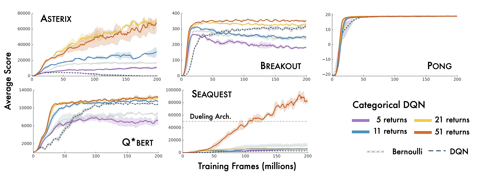

Who wants to be average? Or rather, who wants to learn to predict an average? This was an idea explored in a 2017 paper called a distributional perspective on reinforcement learning. It proposed that instead of just learning to predict the expected value of the return from state-action pairs, RL agents should learn to predict the probability distribution of the random variable corresponding to the return. This idea was justified by a proof of the convergence of a distributional analogue of the Bellman operator, and empirical results in Atari games showing that the C51 algorithm, which predicted distributions, outperformed DQN, which predicted expected values, in most tasks. 
But the empirical evidence, though promising, didn’t conclusively show that the distributional perspective always helped, and theoretical results justifying the claimed improved performance were scarce. Over the following year, more analysis followed, leading to improved empirical performance (Dabney et al., 2017) and richer theoretical understanding of distributional RL (Rowland et al., 2018). However, one question hung ominously in the distance.
Why does distributional RL work?
There were a few hypotheses floating around. Predicting many things (i.e. auxiliary tasks) often leads to better performance, so it seems reasonable that distributional RL benefits from the many quantiles/atoms in its approximate representations of distributions. Perhaps probability distributions represent a nicer optimization landscape than expected values. Or maybe modeling a probability distribution leads to less jittering of the target function as the agent is learning.
Before trying to tackle the question of why predicting a distribution is helpful, let’s ask a simpler question. The deep RL setting has a lot of moving parts, after all, and it can be difficult to disentangle different factors in behaviour.
When is distributional RL different from expected RL?
This question lends itself much more easily to analysis. Hopefully, it will also provide some hints into what makes the distributional perspective perform better when the answer to the question above is negative.
I’m assuming you (the reader) are familiar with basic reinforcement learning ideas like MDPs and the Bellman operator. If that’s not the case, consider checking out chapters 1-4 of Sutton. We’ll assume the usual notation for reinforcement learning. That is, we let \(M = (\mathcal{X}, \mathcal{A}, R, P, \gamma)\) denote an MDP, with \(\pi\) a policy. For the value functions, we’ll use \(Q: \mathcal{X} \times \mathcal{A} \rightarrow \mathbb{R}\) and \(V: \mathcal{X} \rightarrow \mathbb{R}\) for the Q and value-functions respectively.
At the core of distributional reinforcement learning is what’s called the distributional bellman equation. The normal Bellman operator \(T^\pi\) looks like this:
\(T^{\pi} Q(x,a) = \mathbb{E}[R(x,a)] + \gamma \mathbb{E}_{x', a' \sim P^\pi(\cdot|x,a)}Q(x', a')\).
Notice the expected values? We’re going to lift this operator to act on functions of the form \(Z: \mathcal{X} \times \mathcal{A} \rightarrow \mathcal{P}(\mathbb{R})\) (where \(\mathcal{P}(\mathbb{R})\) refers to the set of probability distributions on \(\mathbb{R}\)) by getting rid of them, and looking at the laws of the underlying random variables. We then get\(T^{\pi}_D Z(x,a) \stackrel{D}{=} R(x,a) + \gamma Z(X', A')\).
Note that this is equality in distribution. We abuse notation a bit here in that \(Z\) evokes a random variable while we really care about probability distributions, but writing the distributions directly involves a lot of overhead involving pushforward measures that seemed overkill for a blog post. So where \(Z\) appears, consider it to be a generic random variable that can be any realization of the underlying distribution that we actually care about.
Let’s consider two RL agents: Dobby and Elsa. Distributional Dobby is a distributional RL agent. Every time he sees a state-action pair, he makes a prediction about how likely it is for the return to take certain values. For example, if Dobby has to navigate a maze and he thinks there’s a 50% chance he’ll get to the end and find the 100 gold coin treasure in 10 timesteps, and a 50% chance he’ll get to the end in 11 timesteps, then he would assign weight 0.5 to the return \(\gamma^{10} \times 100\) and 0.5 to the return \(\gamma^{11} \times 100\).
Expected Elsa, on the other hand, only cares about expected values. When she thinks there’s a 50% chance that she’ll get to the treasure in 10 vs 11 timesteps, then she averages out the predictions to get that \(V(s,a) = \frac{1}{2}(\gamma^{10} + \gamma^{11})\times 100\). If Elsa takes a step and then realizes that in her new state she thinks she actually has a 50% chance of getting to the treasure in 8 timesteps and a 50% chance taking 11 timesteps, then she wouldn’t need to update the value of the previous \((s,a)\) pair she was at because she guessed the right expected value. Meanwhile, Dobby would be hastily correcting for his TD error.
Baby Dobby and baby Elsa start off in the world with their predictions initialized such that the distributions that Dobby predicts for each state-action pair have the same expected value as the values that Elsa initially predicts. Now, we’ll let Dobby and Elsa interact with the world by picking some action, then seeing a reward and transitioning to a new state.
In math: Dobby has some distribution function \(Z : \mathcal{X} \times \mathcal{A} \rightarrow \mathcal{P}(\mathbb{R})\). Elsa has a value function \(Q : \mathcal{X} \times \mathcal{A} \rightarrow \mathbb{R}\). We assume \(Z_0\) and \(Q_0\) are initialized such that \(\mathbb{E}(Z_0(x,a)) = Q_0(x,a) \quad \forall x, a\).
In our thought experiment, we couple the trajectories of Dobby and Elsa so that if they agree on the same optimal policy, they’ll take the same trajectory through the MDP. For example, if both are doing epsilon-greedy action selection, then they’ll always either both pick the optimal action, or both pick the same suboptimal action. Assuming they pick the same action, they’ll also then transition to the same next state and see the same reward. They then update their predictions according to some distributional and expected update rule, and repeat this ad infinitum. In this setup, given equivalent intializations, if the two agents always agree on the optimal policy after every update, they will experience the same trajectory in the MDP, and in this sense be behaviourally equivalent.
What determines whether the two agents agree on the optimal policy is how they update their predictions after each step in the MDP. We’re interested in analogous update rules: for example, if Elsa uses the Bellman update, Dobby will use the distributional Bellman update. If for some distributional update rule and find an expectation-based update rule that induces behavioural equivalence, then we can say that distributional algorithms using that update rule should behave like traditional RL algorithms, with any observed empirical differences coming from random seeds and initialization variability. It’s common in RL for the same algorithm to attain wildly different results for different random seeds, so proving mathematically that two algorithms are equivalent is a pretty powerful statement.
Findings are summarized in the following table, which can be interpreted as follows. The first column indicates how the agent is representing the value/distribution function: tabular/linear/nonlinear. The second column describes the update rules of our distributional agent and, if one exists, its equivalent expected update. For example, in the tabular setting we observe that the distributional bellman operator and the expected bellman operator are equivalent in the sense described above. That is, if Dobby updates with \(T^\pi_D\) and Elsa updates with \(T^\pi\), then under suitable initializations they’ll both always agree on the optimal policy – hence the check mark in the third column. An ‘x’ indicates that there exist some distributional updates in the second column for which no equivalent expected update exists – not that it’s necessarily the case that every distributional update rule in this class has no expected equivalent. For example, one could produce a silly nonlinear distribution function approximator which first computes its predicted expected value \(\mu\), then outputs a \(\mathcal{N}(\mu, 1)\) distribution, and attempts to minimize
| Setting | Update Rule | Equivalent? |
|---|---|---|
| Tabular | \(\begin{equation*} Z_{t+1}:= T^\pi_\mathcal{D} Z_t \quad Q_{t+1} := T^\pi Q_t, \end{equation*}\) | ✔ |
| Tabular |
\(\begin{equation*} \begin{array}{ll} P_{Z_{t+1}}(x, a) := (1 - \alpha_t) P_{Z_t}(x, a) + \alpha_t P_{Z_t'}(x_t, a_t) & \\ Q_{t+1}(x_t, a_t) := (1-\alpha_t)Q_t(x_t, a_t) + \alpha_t (r_t + \gamma Q_t(x', a')) \end{array} \end{equation*}\) |
✔ |
| Tabular, categorical distribution | \begin{equation*} \begin{array}{ll} F_{Z_{t+1}}(x, a) := \small F_{Z_t}(x, a) + \alpha_t' \nabla_F \ell_2^2(Z_t(x_t, a_t), Z_t'(x_t, a_t))\\ Q_{t+1} := (1-\alpha_t)Q_t(x_t, a_t) + \alpha_t (r_t + \gamma Q_t(x', a')) \end{array} \end{equation*} | ✔ |
| Tabular, categorical distribution | Gradient of arbitrary distributional loss function | ✘ |
| Linear Approximation\(^*\) | \(\begin{equation*}\begin{array}{} W_{t+1} := W_t + \alpha_t \nabla_W \ell_2^2( \psi(W, \phi(x_t, a_t)), F_{Z_t'})\\ \theta_{t+1} := \theta_t + \alpha_t (\phi_t(v_t - \theta^T\phi_t)) \end{array} \end{equation*}\) | ✔ |
| Linear Approximation | Gradient of arbitrary distributional loss function | ✘ |
| Nonlinear Approximation | General gradient update | ✘ |
We considered a few settings: tabular MDPs with both operator and stochastic updates, as well as the function approximation setting. The quick summary of our findings is that state representation matters, and so does the way we define distance between distributions.
In the tabular setting, we find that (distributional) Bellman updates, TD-mixture updates, and updates which minimize the Cramer distance between a distribution and its TD target (w.r.t. a categorical distribution’s CDF) are all equivalent to expected algorithms. Interestingly, distributional algorithms that minimize other types of distances between distributions using different parameters (for example, the Cramer distance w.r.t. the PMF of a categorical distribution) may lead to different behaviour from expected algorithms even in the tabular setting. In fact, taking gradients of the distributional TD error with respect to the PMF can actually induce weird non-probability measures that take negative values for certain outcomes.
In the function approximation setting, we find that the distributional perspective makes a big difference – particularly when non-linear function approximation is used. Whereas in the linear function approximation setting, just like in the tabular setting, minimizing the squared Cramer distance between the predicted distribution and a distributional version of the linear TD target is equivalent to vanilla linear function approximation, in non-linear function approximation even this equivalence fails to hold.
We did a bit of empirical exploration in simple environments to explore how distributional and expected perspectives differ in controlled settings. We considered two environments: Acrobot, where an agent tries to swing a pendulum above a threshold by controlling the torque on its joints, and CartPole, where an agent attempts to balance a pole on a cart by moving the cart left and right. We considered the following algorithms: DQN (value function approximation), C51 (as in (Bellemare et al., 2017)), and S51 (< a href=“https://arxiv.org/pdf/1902.03149.pdf” >Bellemare et al., 2019) (minimizes the Cramer distance between target and prediction).
Performance of linearized versions of algorithms using the Fourier basis (acrobot left, cartpole right):
Effect of basis order on performance of C51 (acrobot left, cartpole right):
Effect of different algorithms with deep feature representations (acrobot left, cartpole right):